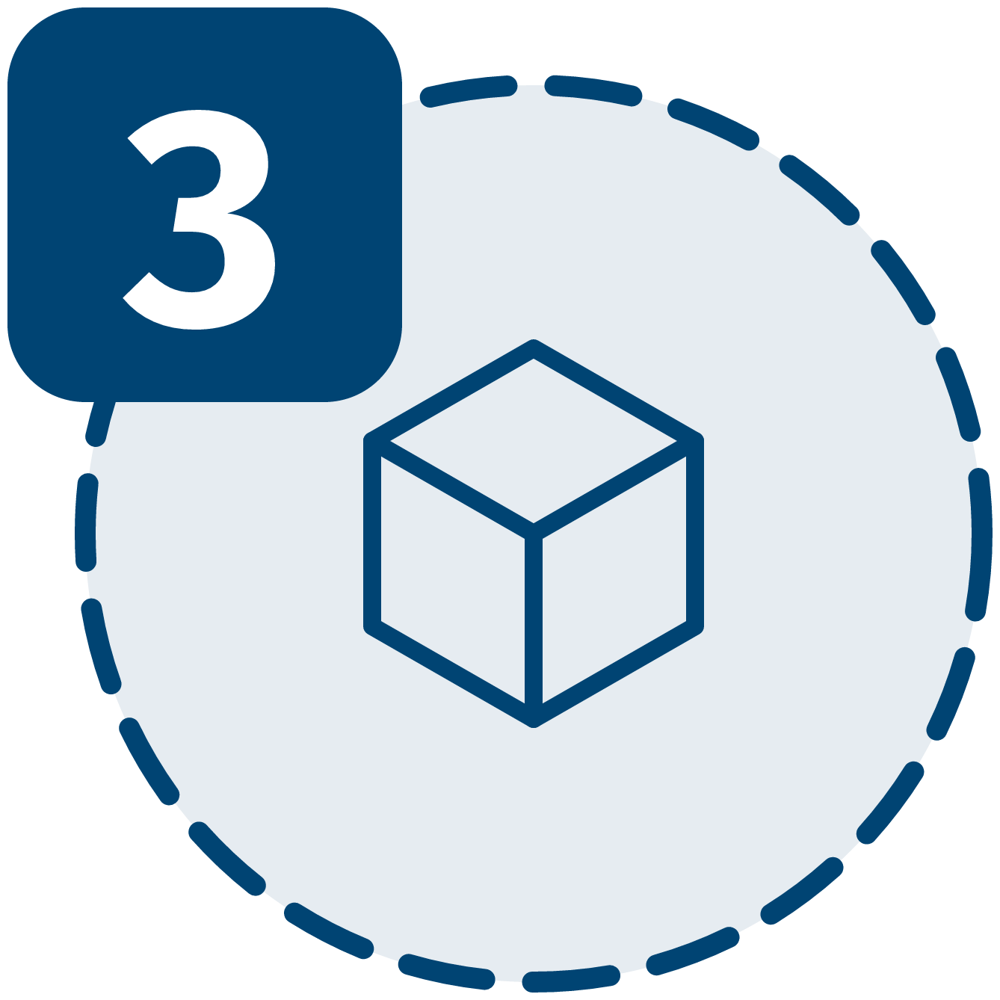
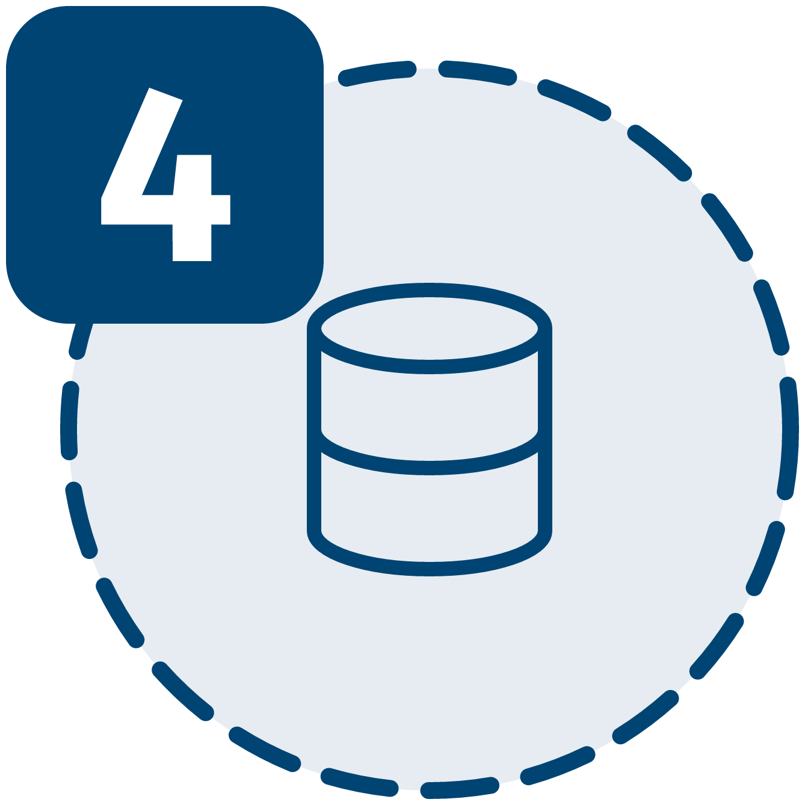

Pictograms: fdo-git-packager
The four pictograms of the fdo-git-packager steps: pin, inspect, package, build.
Concept. fdo-git-packager is a skeleton; these graphics show the planned design. Dashed outlines mark what is planned, solid outlines what exists.
Concept: planned, not implemented yet
GI.1Pictogram for git-packager step 1: pin the repository to a commit.
FDOx-squirrel, fdox-visuals (Florian Thiery, LEIZA). Code: MIT licence.


Concept: planned, not implemented yet
GI.2Pictogram for git-packager step 2: inspect the working tree.
FDOx-squirrel, fdox-visuals (Florian Thiery, LEIZA). Code: MIT licence.


Concept: planned, not implemented yet

GI.3Pictogram for git-packager step 3: package metadata and files.
FDOx-squirrel, fdox-visuals (Florian Thiery, LEIZA). Code: MIT licence.


Concept: planned, not implemented yet

GI.4Pictogram for git-packager step 4: build and publish.
FDOx-squirrel, fdox-visuals (Florian Thiery, LEIZA). Code: MIT licence.